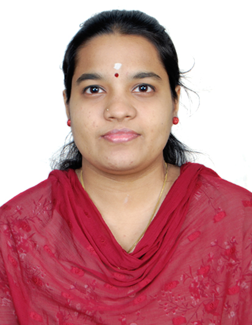

Shalini S

Summary
An organized and a highly
motivated individual, seeking
an opportunity to work in an
upright and dynamic
environment, to nurture and
grow along with the
organisational goals personally
and professionally.
Education
- B.Tech Information Technology - SRM Valliammai Engineering College
- HSC - St.Marks' Matriculation Higher Secondary School
- SSLC - St.Marks' Matriculation Higher Secondary School
Work Experience
-
Full Stack Engineering Senior Analyst - Accenture
2022-Present
- Working on application development using Angular,.NET,MongoDB and Python
- Deployment of application using dockerization
- Analysing user needs and doing POCs to check feasibility for further development
-
Application Development Analyst - Accenture
2021-2022
- Working on application development using Angular,MongoDB and Python
- Deployment of application using dockerization
- Conducting KT sessions for new joiners in team
Skills
- Programming languages - Python, Javascript
- Web Technology - HTML,CSS,Angular,React
- Database - SQL,MongoDB
- Editors - VSCode,PythonIDE
Certifications
- Honours Diploma in Computer
Application (HDCA) — 2016 (CSC)
Awarded the highest grade 'A'
- Diploma in J2EE Programming
(DJP) — 2018 from CSC
Awarded the highest grade 'A'
- DataScience certification-2020 from IBM
- Web Development Bootcamp - 2024 from Udemy
Others